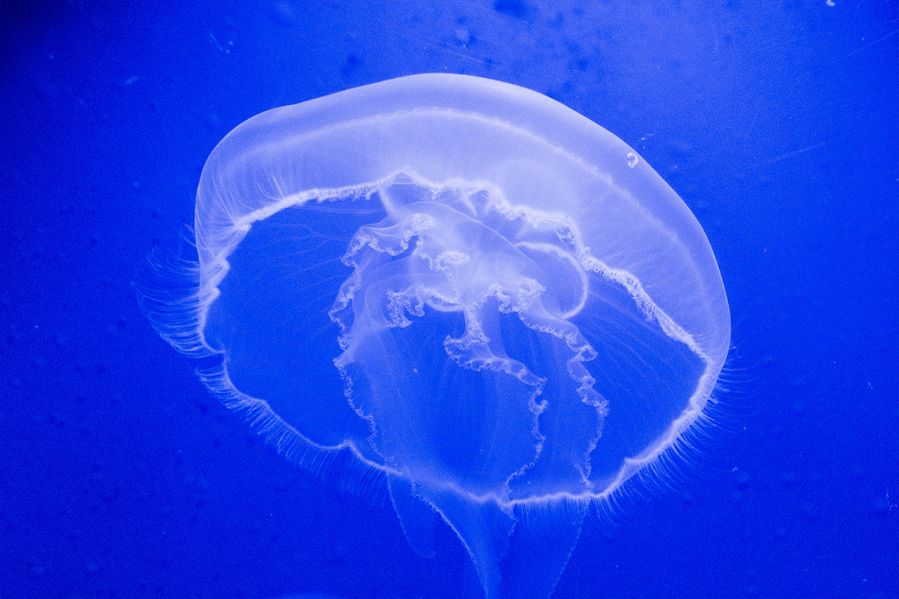
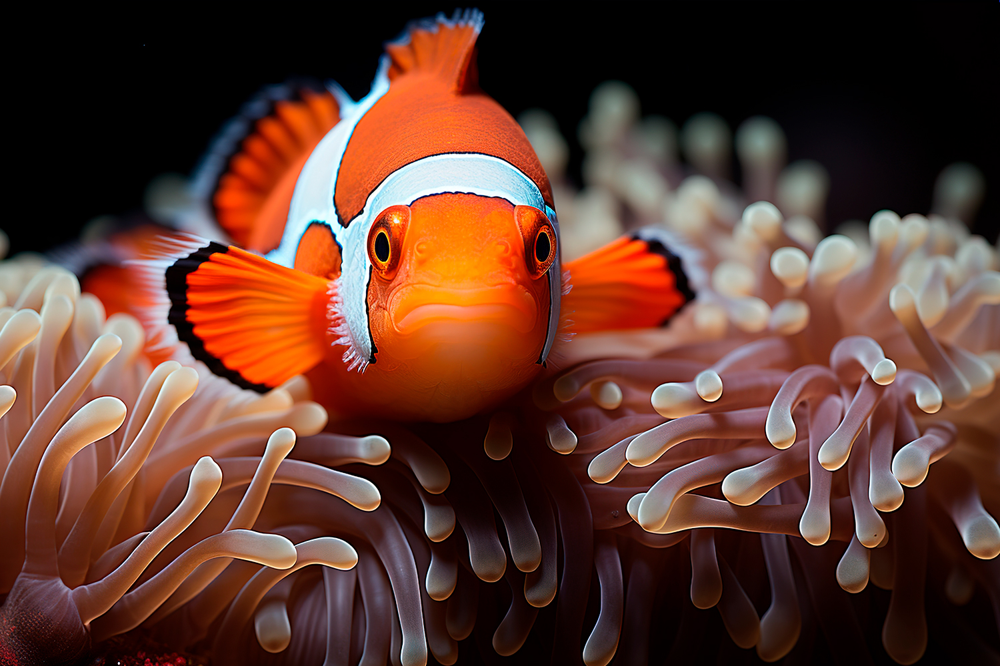

 Las medusas son algunos de los organismos más antiguos que habitan en el planeta Tierra, donde están presentes desde hace más de 500 millones de años. Se trata de un grupo de animales marinos invertebrados que se engloba dentro del filo de los Cnidarios. Poseen un cuerpo gelatinoso en forma de campana del que salen los tentáculos y el tronco, de forma tubular. Las diferentes subespecies son muy diversas en cuanto al tamaño y color que las caracteriza. Incluso algunos tipos de medusa son bioluminiscentes. Se desplazan de manera muy lenta aunque elegante, de hecho se cree que las corrientes marinas son un factor clave para sus desplazamientos.
Peces
-
Peces
Desde algunos miembros de la familia de los ciprínidos que no superan los 8 milímetros de longitud, hasta el tiburón ballena, uno de los peces más grandes que habitan en el océano y que puede llegar a alcanzar los 12 metros, podemos encontrar una gran variedad de peces diferentes.
Así, ante la pregunta de ¿qué es un pez?, que puede en un principio resultar fácil de responder debido a la enorme diversidad de este grupo de animales, encontramos que la respuesta a tal pregunta se torna un tanto más compleja. Podemos encontrar más de 27.900 especies de peces, tanto de agua dulce como salada y capaces de habitar en entornos que oscilan entre los 40 y los -2 ºC.
Todos viven en un medio acuático y tienen un cerebro protegido por una caja craneal y una región bien diferenciada a modo de cabeza donde se albergan los ojos, dientes y otros órganos sensoriales. La mayoría de los peces son vertebrados cuyas vértebras se disponen protegiendo la médula espinal, respiran principalmente mediante branquias y tienen diversos pares de miembros en un número variable y en forma de aletas mediante los cuales se desplazan. También se trata de organismos incapaces de regular su temperatura corporal interna y cuyo cuerpo se encuentra cubierto de escamas destinadas a protegerles.
-
 Los Betta son peces por lo general calmados y de movimientos lentos y no requieren de
mucho espacio, a diferencia de otros peces. Los Betta despliegan sus aletas cuando se
sienten amenazados o incómodos mostrando agresión.
Los Betta machos atacan a otros Betta machos y también se sabe que atacan a otros peces
de apariencia similar, y a aquellos que tienen aletas prominentes y vistosas. Por
consiguiente, los Betta machos no deben ser mantenidos juntos o con otras especies que
tengan aletas largas
Los Betta son peces por lo general calmados y de movimientos lentos y no requieren de
mucho espacio, a diferencia de otros peces. Los Betta despliegan sus aletas cuando se
sienten amenazados o incómodos mostrando agresión.
Los Betta machos atacan a otros Betta machos y también se sabe que atacan a otros peces
de apariencia similar, y a aquellos que tienen aletas prominentes y vistosas. Por
consiguiente, los Betta machos no deben ser mantenidos juntos o con otras especies que
tengan aletas largas

El pez payaso, reconocido fácilmente por sus brillantes colores blancos y anaranjados, es miembro del orden Perciformes, de la familia Pomacentridae y de la subfamilia Amphiprioninae. También es llamado pez anémona, y en realidad se le llama así a todos los pertenecientes a dicha subfamilia. Por lo tanto, existen 30 especies de pez payaso. Los peces payaso miden de 10 a 18 centímetros de longitud, siendo los machos más pequeños que las hembras. La coloración del cuerpo depende de la especie, pero tienden a tener tonos amarillos, rojos, rosas, naranjas e incluso negruzcos, con 3 franjas blancas situadas en la cabeza, en la cola y en la región central del cuerpo. El borde de las aletas es negro.